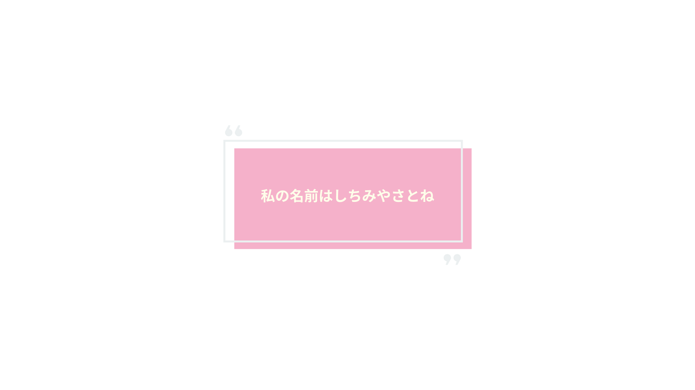
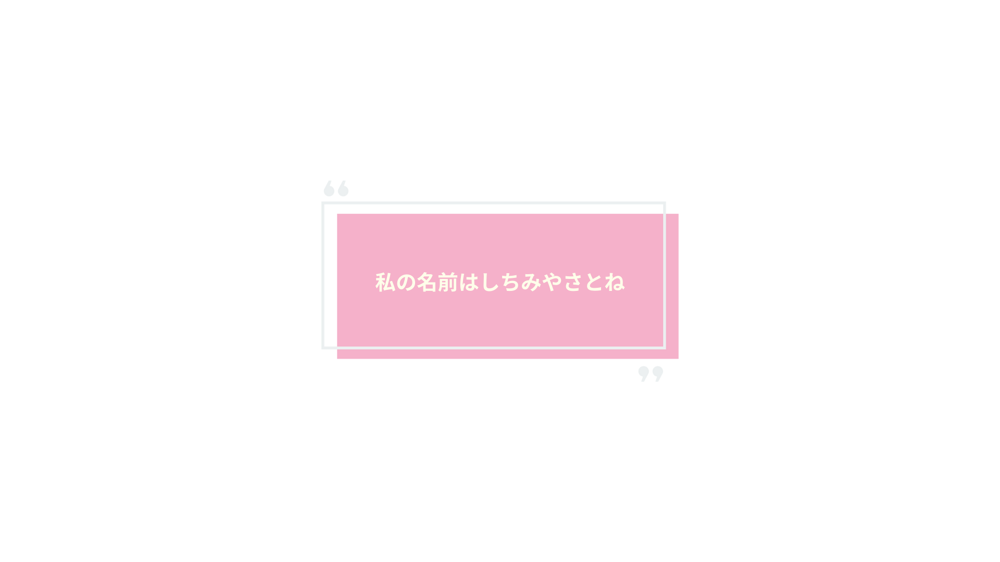

❤動畫劇情
在動畫第二季中，在動畫第二季《中二病也要談戀愛！戀》中，智音轉學到勇太的學校，重新出現在他的生活中。雖然 他們的友誼迅速恢復，但智音逐漸發現，勇太已經和另一名女孩，小鳥遊六花，建立了特殊的感情。這讓智音不得不面 對自己內心深處一直隱藏的情感——她對勇太的愛慕之情。智音在多年以來一直把這份感情埋藏在心中，而與勇太的再次 相遇讓她不得不直視這段未曾表露的愛。智音的最大掙扎在於她對勇太的感情以及她對"中二病"幻想世界的依戀。她始 終抱著中二病的幻想，作為一種逃避現實的方式。對於智音而言，"蘇菲婭寧·SP·撒旦七世"的身份讓她有勇氣面對現實 中的困難。然而，當她發現勇太已經在現實世界中找到了另一個依靠（六花），她開始動搖，這使得她必須在維持幻想 與面對現實之間做出選擇。在經歷了與勇太和六花的互動後，智音最終選擇了接受現實，並決定放下對勇太的愛慕。這 對她來說是一個艱難的過程，但同時也是她個人成長的標誌。她明白到自己的感情無法得到回應，因此，她將這段愛情藏 在心底，繼續以她自己的方式生活下去。
 
